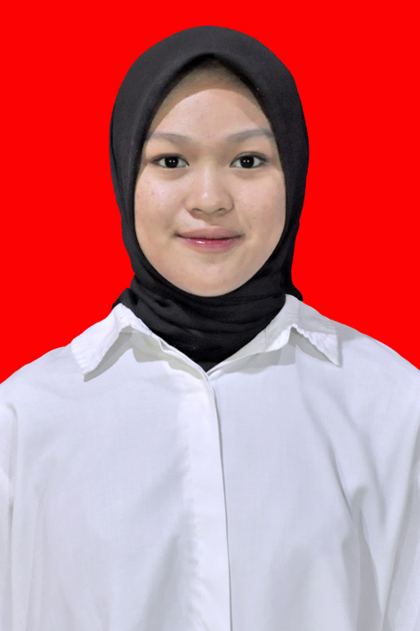

Amanda Zuhra Azis
Mahasiswa
Profil
Mahasiswa S1 Sistem Infomasi yang tertarik pada analisis bisnis dan tranformasi digital. Memiliki pemahaman tentang database, jaringan komputer dan pengelolaan sistem informasi, serta memiliki pengalaman dalam pemrograman dasar
Pendidikan
- SD Negeri 009 Tenggarong (2011 - 2017)
- SMP Negeri 3 Tenggarong (2017 - 2019)
- SMA Negeri 1 Tenggarong – Jurusan IPA (2020 - 2023)
- Universitas Telkom University – S1 Sistem Informasi (2023 - Sekarang)
Pengalaman
- Panitia event tahunan HMSI CYVERO – Anggota divisi equipper
- Magang di sekretariatan daerah di bagian organisasi Membantu proses pekerjaan di bidang analisi jabatan dan analisis beban kerja
- Staff komunitas PSI – sebagai anggota divisi manager
- Mengikuti OSIS pada saat SMA – sebagai sekretaris umum OSIS
Keahlian
- programming menggunakan python dan java
- Database menggunakan MySQL
- Jaringan Komputer menggunakan Cisco
- UI/UX Design menggunakan Figma dan Canva
- kerja sama tim
- mendengarkan secara aktif
- berpikir kritis
- perhatian terhadap detail
- mudah beradaptasi
- kreatif